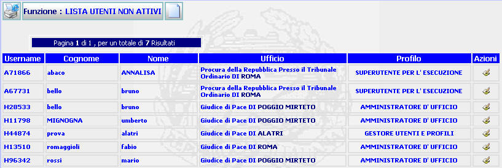

GENERALITA'
LISTA UTENTI NON ATTIVI: La funzione, consente di visualizzare e modificare i dati relativi agli utenti presenti nel sistema ma non attivi ovvero con la Data di Fine Validità scaduta.
LE MASCHERE VIDEO
La funzione in esame viene realizzata attraverso l'utilizzo della seguente maschera che riporta gli elementi descrittivi e operativi dei dati dell'utente:

COME FARE PER ...
| Per modificare i dati inseriti relativi all' utente, l'amministratore deve: |
Cliccare sul pulsante
in corrispondenza del profilo che si vuole modificare; si aprirà la maschera modifica utente che permette di effettuare le modifiche volute tra cui reimpostare la data di fine validità.
| Per iscrivere un nuovo utente, l'amministratore deve: |
Cliccare sul pulsante
 ; si aprirà la maschera di
inserimento utente
che permette di iscrivere un nuovo utente.
; si aprirà la maschera di
inserimento utente
che permette di iscrivere un nuovo utente.
| Per visualizzare, se presente, un'altra pagina occorre:
|

PULSANTI
Sono presenti i
pulsanti
 ,
e
,
,
e
,